A short description of the post.
Question: Using the Boston data set, fit classification models in order to predict whether a given census tract has a crime rate above or below the median. Explore logistic regression, LDA, naive Bayes, and KNN models using various subsets of the predictors. Describe your findings.
Answer: In homework 1 we looked at predictors for linear regression individual and with all in the same equation however we did not look at logistic regression. As can be seen from the correlation graph above and prior correlation calculations a handful of predictors seem to exhibit some correlation with crime that I will be using, these will be rad, tax dis medv, and lstat.
Here we want to predict if crime is above the median so first we will make a variable that reflects this.
median_crime_rate <- median(Boston$crim)
median_crime_rate %>% kable()
| x |
|---|
| 0.25651 |
Answer Median Crime: In order to create the median crime rate dummy variable I calculate the median crime rate in the Boston dataset and use the mutate function to create a new column with this data.
Boston_over_median <- Boston %>% mutate(median_crime_in_tract = case_when(
crim < 0.25651 ~ 0,
crim >= 0.25651 ~ 1))
Answer Pairs After this I look at pair to attempt to distinguish if some variables seem particularly correlated with median crime rate visually.
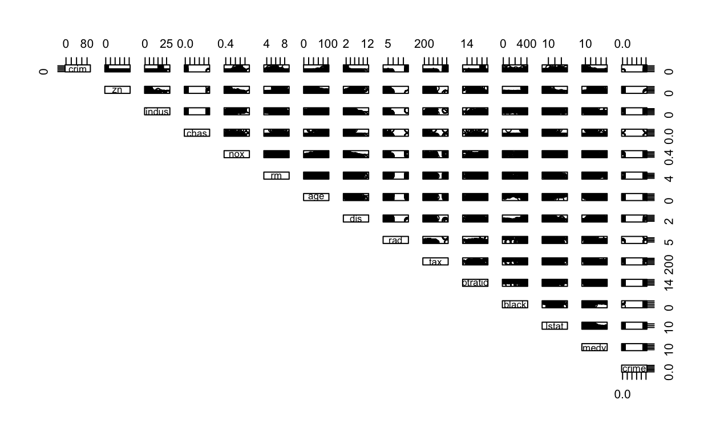
Building a training and test set: Though it is mentioned more in later chapters the authors do use a split in their data in Smarket to act as their training. In this case I will do something similar, however, I will use a sample of 70% of the data.
Model Choice Logistic 1: Firstly I will be using all of the variables in my logistic regression and using both p-values and standard errors along with the predict function to evaluate the model
set.seed(222)
logsitic_Boston_1<- glm(median_crime_in_tract ~ zn + indus + chas + nox + rm + age + dis + rad + tax + ptratio + lstat + medv, data = Boston_over_median, family = binomial, subset=in_training)
summary(logsitic_Boston_1)
Call:
glm(formula = median_crime_in_tract ~ zn + indus + chas + nox +
rm + age + dis + rad + tax + ptratio + lstat + medv, family = binomial,
data = Boston_over_median, subset = in_training)
Deviance Residuals:
Min 1Q Median 3Q Max
-2.0510 -0.1337 -0.0003 0.0035 3.4664
Coefficients:
Estimate Std. Error z value Pr(>|z|)
(Intercept) -48.641048 7.865389 -6.184 6.24e-10 ***
zn -0.092755 0.042744 -2.170 0.03000 *
indus -0.074307 0.050366 -1.475 0.14012
chas 0.468421 0.798887 0.586 0.55765
nox 51.914808 9.097957 5.706 1.16e-08 ***
rm 0.444596 0.867999 0.512 0.60851
age 0.014141 0.013691 1.033 0.30167
dis 0.784864 0.256550 3.059 0.00222 **
rad 0.631667 0.196382 3.217 0.00130 **
tax -0.005575 0.003062 -1.821 0.06861 .
ptratio 0.442991 0.153263 2.890 0.00385 **
lstat 0.141092 0.058371 2.417 0.01564 *
medv 0.166757 0.086194 1.935 0.05303 .
---
Signif. codes: 0 '***' 0.001 '**' 0.01 '*' 0.05 '.' 0.1 ' ' 1
(Dispersion parameter for binomial family taken to be 1)
Null deviance: 490.75 on 353 degrees of freedom
Residual deviance: 146.76 on 341 degrees of freedom
AIC: 172.76
Number of Fisher Scoring iterations: 9set.seed(222)
logsitic_1_Boston_probs <- predict(logsitic_Boston_1, test_boston,
type = "response")
log_preds_1<-ifelse(logsitic_1_Boston_probs >= 0.5, 1, 0)
prediction_1_logs <-mean(log_preds_1 == test_boston$median_crime_in_tract)
prediction_1_logs %>% kable()
| x |
|---|
| 0.8618421 |
Results Logistic 1: As can be seen above the first logistic model appears to correctly evaluate whether or not a census tract in our test set is above or below the median correctly 0.8618421 or 86.2% of the time.
Model Choice Logistic 2: For my second function I will be using only the variables that my glm output as statistically significant based on the glm p-values. This would suggests that most of these coefficients are unlikely to be zero.
set.seed(222)
logsitic_Boston_2 <- glm(median_crime_in_tract ~ zn + nox + dis + rad +
ptratio + medv , data = Boston_over_median, family = binomial,
subset=in_training)
summary(logsitic_Boston_2)
Call:
glm(formula = median_crime_in_tract ~ zn + nox + dis + rad +
ptratio + medv, family = binomial, data = Boston_over_median,
subset = in_training)
Deviance Residuals:
Min 1Q Median 3Q Max
-2.07337 -0.24571 -0.00187 0.00753 3.13797
Coefficients:
Estimate Std. Error z value Pr(>|z|)
(Intercept) -35.02931 5.78928 -6.051 1.44e-09 ***
zn -0.07337 0.03319 -2.210 0.027089 *
nox 41.29154 6.64906 6.210 5.29e-10 ***
dis 0.60332 0.21526 2.803 0.005068 **
rad 0.48104 0.13704 3.510 0.000448 ***
ptratio 0.32090 0.12317 2.605 0.009175 **
medv 0.11077 0.03732 2.968 0.002993 **
---
Signif. codes: 0 '***' 0.001 '**' 0.01 '*' 0.05 '.' 0.1 ' ' 1
(Dispersion parameter for binomial family taken to be 1)
Null deviance: 490.75 on 353 degrees of freedom
Residual deviance: 168.50 on 347 degrees of freedom
AIC: 182.5
Number of Fisher Scoring iterations: 8Results Logistic 2: As can be seen above this has lead to a very slightly reduction in the error rate from about 86% to about 89% of tracts being correctly identified.
Model Choice Logistic 3: Next, I will remove variables that changed in their significance, I will remove ones that went down in significance in my third iteration and include those that stayed the same or improved in their “statistical significance so here we just remove zn.
set.seed(727)
logsitic_Boston_3 <- glm(median_crime_in_tract ~ nox + dis + rad +
medv , data = Boston_over_median, family = binomial, subset=in_training)
summary(logsitic_Boston_3)
Call:
glm(formula = median_crime_in_tract ~ nox + dis + rad + medv,
family = binomial, data = Boston_over_median, subset = in_training)
Deviance Residuals:
Min 1Q Median 3Q Max
-1.96251 -0.34660 -0.03326 0.01130 2.61492
Coefficients:
Estimate Std. Error z value Pr(>|z|)
(Intercept) -23.82357 4.00139 -5.954 2.62e-09 ***
nox 36.77822 6.01008 6.119 9.39e-10 ***
dis 0.30796 0.16164 1.905 0.056747 .
rad 0.43698 0.12121 3.605 0.000312 ***
medv 0.03308 0.02884 1.147 0.251420
---
Signif. codes: 0 '***' 0.001 '**' 0.01 '*' 0.05 '.' 0.1 ' ' 1
(Dispersion parameter for binomial family taken to be 1)
Null deviance: 490.75 on 353 degrees of freedom
Residual deviance: 187.91 on 349 degrees of freedom
AIC: 197.91
Number of Fisher Scoring iterations: 8Results Logistic 3: As can be seen by the error rate above, removing the single variable did not serve to improve the fit as it is still guessed about 89% of the tracts correctly.
Model Choice LDA 1: My first fit for LDA will again start by using all of the variables in the dataset.
set.seed(292)
lda.fit_1 <- lda(median_crime_in_tract ~ zn + indus + chas + nox + rm +
age + dis + rad + tax + ptratio + lstat + medv,
data = Boston_over_median, subset=in_training)
lda.fit_1
Call:
lda(median_crime_in_tract ~ zn + indus + chas + nox + rm + age +
dis + rad + tax + ptratio + lstat + medv, data = Boston_over_median,
subset = in_training)
Prior probabilities of groups:
0 1
0.5 0.5
Group means:
zn indus chas nox rm age dis
0 23.161017 6.824407 0.06214689 0.4684520 6.407825 49.71808 5.085899
1 1.265537 15.204181 0.10169492 0.6392147 6.174492 86.04802 2.537347
rad tax ptratio lstat medv
0 4.19209 307.8192 17.85706 9.061356 25.25424
1 13.92655 496.0226 18.95932 16.165819 20.23842
Coefficients of linear discriminants:
LD1
zn -0.0075446955
indus 0.0111437527
chas -0.2075615996
nox 9.1062150722
rm 0.2401656098
age 0.0131358309
dis 0.1330540845
rad 0.0584337654
tax -0.0006712969
ptratio 0.1157332806
lstat 0.0409740539
medv 0.0509953338Results LDA 1: As can be seen above the LDA output suggests that pihat1 and pihat2 are both 0.5 so half of the tracts are below and half are above the median as should be expected.
set.seed(292)
lda.pred <- predict(lda.fit_1, test_boston)
lda.class <- lda.pred$class
table(lda.class, test_boston$median_crime_in_tract) %>% kable()
| 0 | 1 | |
|---|---|---|
| 0 | 67 | 17 |
| 1 | 9 | 59 |
Results LDA 1 Continued: As can be seen above the first LDA model with all of the predictors included predicts the test median crime rate dummy variable correctly about 82.9% of the time, in total it predicts the splits above correctly and the total percent as indicated below.
mean(lda.class == test_boston$median_crime_in_tract) %>% kable()
| x |
|---|
| 0.8289474 |
Results LDA 1 Continued: Below we see that with a 50% threshold we acquire the two predictions below.
sum(lda.pred$posterior[, 1] >= .5) %>% kable()
| x |
|---|
| 84 |
sum(lda.pred$posterior[, 1] < .5) %>% kable()
| x |
|---|
| 68 |
Results LDA 1 Continued: The plot of the fit is as plotted below.
plot(lda.fit_1)
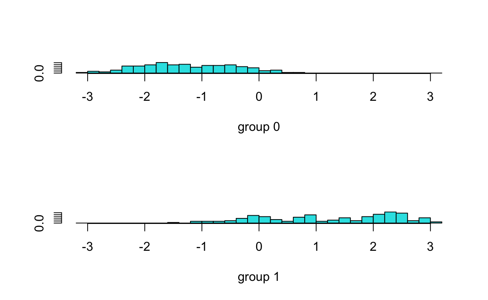
Model Choice LDA 2: Since LDA does not give an indication of the performance of individual predictors I will model my second one using the predictors that logistic regression indicated as statistically significant, or likely to be non-zero.
set.seed(292)
lda.fit_2 <- lda(median_crime_in_tract ~ zn + nox + dis + rad + ptratio
+ medv , data = Boston_over_median, subset=in_training)
lda.fit_2
Call:
lda(median_crime_in_tract ~ zn + nox + dis + rad + ptratio +
medv, data = Boston_over_median, subset = in_training)
Prior probabilities of groups:
0 1
0.5 0.5
Group means:
zn nox dis rad ptratio medv
0 23.161017 0.4684520 5.085899 4.19209 17.85706 25.25424
1 1.265537 0.6392147 2.537347 13.92655 18.95932 20.23842
Coefficients of linear discriminants:
LD1
zn -0.007133417
nox 10.155028179
dis -0.006666860
rad 0.051446121
ptratio 0.116810250
medv 0.036270047Results LDA 2: As can be seen above the LDA output suggests that pihat1 and pihat2 are both 0.5 so half of the tracts are below and half are above the median as should be expected as in the first example.
set.seed(292)
lda.pred_2 <- predict(lda.fit_2, test_boston)
lda_2.class <- lda.pred_2$class
table(lda_2.class, test_boston$median_crime_in_tract) %>% kable()
| 0 | 1 | |
|---|---|---|
| 0 | 65 | 15 |
| 1 | 11 | 61 |
Results LDA 2 continued: As can be seen below this LDA performs incredibly similarly to the first 0.8289474 with both having identical correct classification rates.
mean(lda_2.class == test_boston$median_crime_in_tract) %>% kable()
| x |
|---|
| 0.8289474 |
sum(lda.pred_2$posterior[, 1] >= .5) %>% kable()
| x |
|---|
| 80 |
sum(lda.pred_2$posterior[, 1] < .5) %>% kable()
| x |
|---|
| 72 |
plot(lda.fit_2)
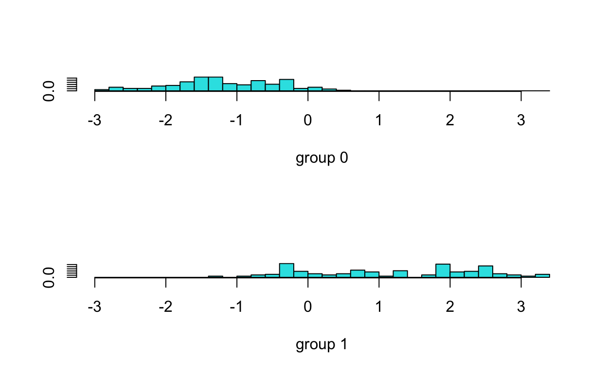
Model Choice LDA 3: For my third LDA model choice I used all of the dummy variables and nox to see how using a number of categorical variables effects the outcome of LDA.
set.seed(7209)
lda.fit_3<- lda(median_crime_in_tract ~ age + rad + chas
+ nox , data = Boston_over_median, subset=in_training)
lda.fit_3
Call:
lda(median_crime_in_tract ~ age + rad + chas + nox, data = Boston_over_median,
subset = in_training)
Prior probabilities of groups:
0 1
0.5 0.5
Group means:
age rad chas nox
0 49.71808 4.19209 0.06214689 0.4684520
1 86.04802 13.92655 0.10169492 0.6392147
Coefficients of linear discriminants:
LD1
age 0.01539699
rad 0.06022015
chas 0.01643176
nox 6.98239859set.seed(7209)
lda.pred_3 <- predict(lda.fit_3, test_boston)
lda.class_3 <- lda.pred_3$class
table(lda.class_3, test_boston$median_crime_in_tract)
lda.class_3 0 1
0 70 16
1 6 60Results Model Choice LDA 3: As seen above this subset of predictors has decreased the misclassification error rate as compared to the previous models using just the most “statistically significant” predictors in LDA. The correct classification rate is around 85% here which is a slight increase from previous models.
mean(lda.class_3 == test_boston$median_crime_in_tract) %>% kable()
| x |
|---|
| 0.8552632 |
sum(lda.pred_3$posterior[, 1] >= .5)%>% kable()
| x |
|---|
| 86 |
sum(lda.pred_3$posterior[, 1] < .5) %>% kable()
| x |
|---|
| 66 |
plot(lda.fit_3)
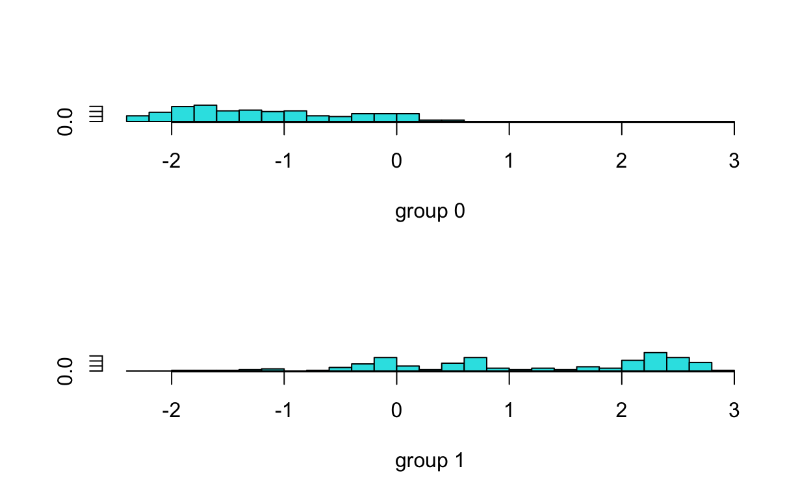
Model Choice Naive Bayes: My first model for naive bayes uses an, nox, rad, and taxes to predict median crime rate.
set.seed(2680)
nb.fit_1 <- naiveBayes(median_crime_in_tract ~ zn + nox +rad +
tax , data = Boston_over_median, in_training)
nb.fit_1
Naive Bayes Classifier for Discrete Predictors
Call:
naiveBayes.default(x = X, y = Y, laplace = laplace)
A-priori probabilities:
Y
0 1
0.5 0.5
Conditional probabilities:
zn
Y [,1] [,2]
0 21.525692 29.319808
1 1.201581 4.798611
nox
Y [,1] [,2]
0 0.4709711 0.05559789
1 0.6384190 0.09870365
rad
Y [,1] [,2]
0 4.158103 1.659121
1 14.940711 9.529843
tax
Y [,1] [,2]
0 305.7431 87.4837
1 510.7312 167.8553Results 1 Naive Bayes: As can be seen from the error rates below the first naive bayes model correctly classifies the predictions 83% of the time whihc is similar to the results of the previous LDA models.
set.seed(2680)
nb.class_1 <- predict(nb.fit_1, test_boston)
table(nb.class_1, test_boston$median_crime_in_tract) %>% kable()
| 0 | 1 | |
|---|---|---|
| 0 | 65 | 15 |
| 1 | 11 | 61 |
mean(nb.class_1 == test_boston$median_crime_in_tract) %>% kable()
| x |
|---|
| 0.8289474 |
Model Choice 2 Naive Bayes: As can be seen below the next model choice uses the same statistically significant predictors according to their p-values in logsitic regression to see if this will improve the prediction of Naive Bayes.
set.seed(382)
nb.fit_2 <- naiveBayes(median_crime_in_tract ~ zn + nox + dis + rad +
ptratio + medv , data = Boston_over_median, subset = in_training)
nb.fit_2
Naive Bayes Classifier for Discrete Predictors
Call:
naiveBayes.default(x = X, y = Y, laplace = laplace)
A-priori probabilities:
Y
0 1
0.5 0.5
Conditional probabilities:
zn
Y [,1] [,2]
0 23.161017 30.10405
1 1.265537 4.93395
nox
Y [,1] [,2]
0 0.4684520 0.05410754
1 0.6392147 0.10448031
dis
Y [,1] [,2]
0 5.085899 2.084295
1 2.537347 1.180086
rad
Y [,1] [,2]
0 4.19209 1.626256
1 13.92655 9.545955
ptratio
Y [,1] [,2]
0 17.85706 1.836210
1 18.95932 2.414571
medv
Y [,1] [,2]
0 25.25424 6.828791
1 20.23842 10.349862Naive Bayes model 2 Results: The inclusion of 6 variables, as opposed to 4 slightly improves the correct classification rate of our model, in this case, about a percent.
set.seed(2680)
nb.class_2 <- predict(nb.fit_2, test_boston)
table(nb.class_2, test_boston$median_crime_in_tract) %>% kable()
| 0 | 1 | |
|---|---|---|
| 0 | 61 | 9 |
| 1 | 15 | 67 |
mean(nb.class_2 == test_boston$median_crime_in_tract) %>% kable()
| x |
|---|
| 0.8421053 |
training_boston <- Boston_over_median[in_training,]
test_boston <- Boston_over_median[-in_training,]
Model Choice 3 naive Bayes: For this naive bayes I will be using the categorical variables in addition to nox and number of rooms to see the impact of these two categorical variables with the two indicators of density and pollution.
set.seed(282)
nb.fit_3 <- naiveBayes(median_crime_in_tract ~ nox + chas +rad +
rm , data = Boston_over_median, subset = in_training)
nb.fit_3
Naive Bayes Classifier for Discrete Predictors
Call:
naiveBayes.default(x = X, y = Y, laplace = laplace)
A-priori probabilities:
Y
0 1
0.5 0.5
Conditional probabilities:
nox
Y [,1] [,2]
0 0.4684520 0.05410754
1 0.6392147 0.10448031
chas
Y [,1] [,2]
0 0.06214689 0.2421070
1 0.10169492 0.3031041
rad
Y [,1] [,2]
0 4.19209 1.626256
1 13.92655 9.545955
rm
Y [,1] [,2]
0 6.407825 0.5381020
1 6.174492 0.8282674Model Evaluation Naive Bayes 3: As can be seen from the results below the naive Bayes with these variables included performs very well improving the number of correctly identified cross validated points to about 88%.
set.seed(235)
nb.class_3 <- predict(nb.fit_3, test_boston)
table(nb.class_3, test_boston$median_crime_in_tract) %>% kable()
| 0 | 1 | |
|---|---|---|
| 0 | 73 | 14 |
| 1 | 3 | 62 |
mean(nb.class_3 == test_boston$median_crime_in_tract) %>% kable()
| x |
|---|
| 0.8881579 |
Model Choice 1 KNN: Using nox and rad as our variables below we see that 2 nearest neighbors results in a 98% rate of correct identifications.
set.seed(777)
train.X <- cbind(Boston_over_median$nox, Boston_over_median$rad)[in_training, ]
test.X <- cbind(Boston_over_median$nox, Boston_over_median$rad)[-in_training, ]
train.median <- Boston_over_median$median_crime_in_tract[in_training]
knn_pred_1 <- knn(train.X, test.X, train.median, k=2)
table(knn_pred_1, test_boston$median_crime_in_tract) %>% kable()
| 0 | 1 | |
|---|---|---|
| 0 | 74 | 1 |
| 1 | 2 | 75 |
mean(knn_pred_1 == test_boston$median_crime_in_tract) %>% kable()
| x |
|---|
| 0.9802632 |
Model Choice 2 KNN: As can be seen below using these two variables and 3 nearest neighbors decreases the number of correctly identified points in the test set slightly. Continuing to 4 nearest neighbors afterwards we see this trend continue.
set.seed(377)
knn_pred_2 <- knn(train.X, test.X, train.median, k=3)
table(knn_pred_2, test_boston$median_crime_in_tract)
knn_pred_2 0 1
0 72 1
1 4 75mean(knn_pred_2 == test_boston$median_crime_in_tract) %>% kable()
| x |
|---|
| 0.9671053 |
Model Choice 3 KNN:
set.seed(377)
knn_pred_3 <- knn(train.X, test.X, train.median, k=4)
table(knn_pred_3, test_boston$median_crime_in_tract)
knn_pred_3 0 1
0 70 1
1 6 75mean(knn_pred_3 == test_boston$median_crime_in_tract) %>% kable()
| x |
|---|
| 0.9539474 |
KNN-Results: According to the KNN’s above the results of suggests that 2 nearest neighbors have the lowest amount of misclassifications for the nox and rad variables.
basis: We will now derive the probability that a given observation is part of a bootstrap sample. Suppose that we obtain a bootstrap sample from a set of n observations.
Question: What is the probability that the first bootstrap observation is not the jth observation from the original sample? Justify your answer.
Answer: The probability that the first bootstrap observation is the jth observation from the original sample of n observations is 1/n. This means the probability of the converse, that it is not the jth observation is the total probability 1 - 1/n
Question: What is the probability that the second bootstrap observation is not the jth observation from the original sample?
Answer: The probability the second bootstrap observation is not the jth observation is the same as the first since bootstrapping uses replacement so the probability of each observation being drawn does not change from bootstrap to bootstrap even if the number of interest is drawn. As the authors state that since there is replacement the “same observation can occur more than once in the bootstrap data set” (211) so the second observation has the same probability as the first of being the jth observation,
Question: Argue that the probability that the jth observation is not in the bootstrap sample is (1 - 1/n)^n.
Answer: The probability that the jth observation is not in the boot is (1 - 1/n)^n. This is because a the probability for a single observation is (1-1/n), as there is replacement the probability of drawing the jth observation does not change from bootstrap to bootstrap or draw to draw. As a result the probability of jth observation in an entire bootstrap sample is the product of every single bootstrap observation not being j, so because we have n observations to choose from our probability of not having any one in particular observation is the probability of not drawing jth to the power of the number of observations.
Question: When n = 5, what is the probability that the jth observation is in the bootstrap sample?
Answer: As seen below, the probability that the jth observation is in the bootstrap is 0.67232, this is because the probability of not drawing an observation is (1-1/n)^n so the probability of drawing one must be one minus this value as seen below.
(1-(1 - 1/5)^5) %>% kable()
| x |
|---|
| 0.67232 |
Question: When n = 100, what is the probability that the jth observation is in the bootstrap sample?
Answer: In this case when n = 100 the probability that the jth observation is in the bootstrap sample is 0.6339677 or 63.39677%
(1-(1 - 1/100)^100) %>% kable()
| x |
|---|
| 0.6339677 |
Question: When n = 10, 000, what is the probability that the jth observation is in the bootstrap sample?
Answer: In this case when n = 10,000 the probability that the jth observation is in the bootstrap sample is 0.632139 or 63.2139%
(1-(1 - 1/10000)^10000) %>% kable()
| x |
|---|
| 0.632139 |
Question: Create a plot that displays, for each integer value of n from 1 to 100,000, the probability that the jth observation is in the bootstrap sample. Comment on what you observe.
Answer: Below I have plotted an integer value from 0 to 100000 using the colon command. After this I calculate the probability that the observation is in the dataset using 1 - the probability that it is not in the dataset which is (1-(1 - 1/possible_integers)^possible_integers), the inverse of the prior problems. For clarity I have also used the prior n-sizes of 5, 100, and 10,000. As can be seen the data appears to have a negative exponential relationship that eventually reaches a minimum probability near 0.63 no matter how larger the number of bootstraps we take is.
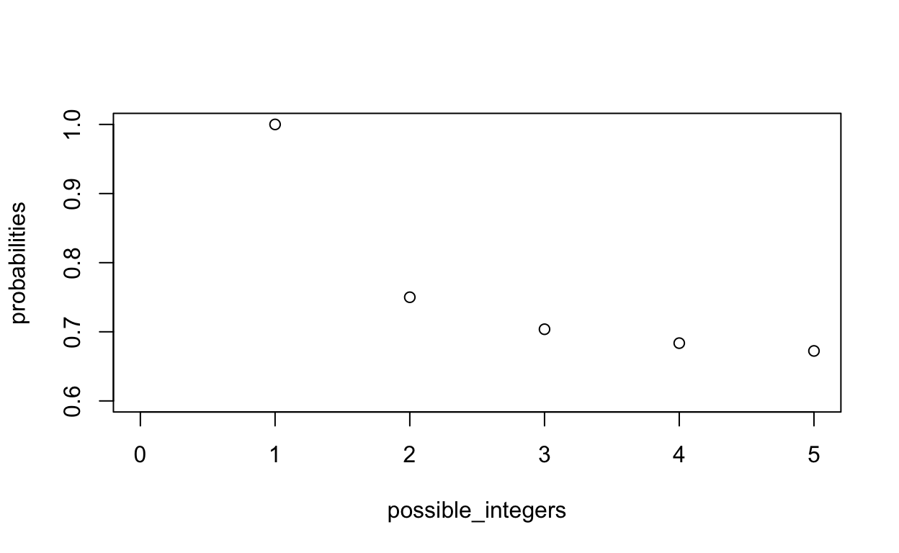
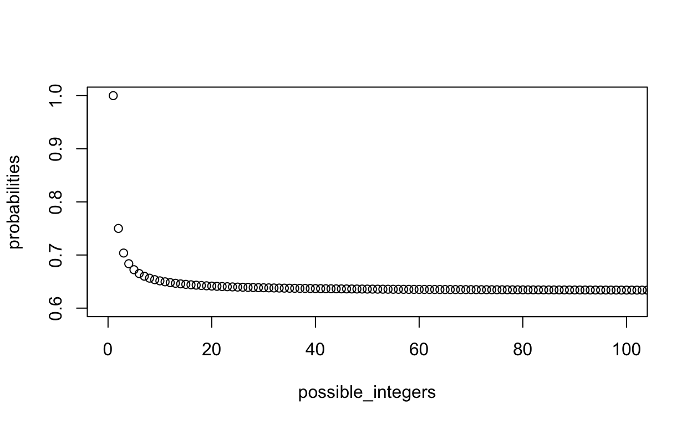
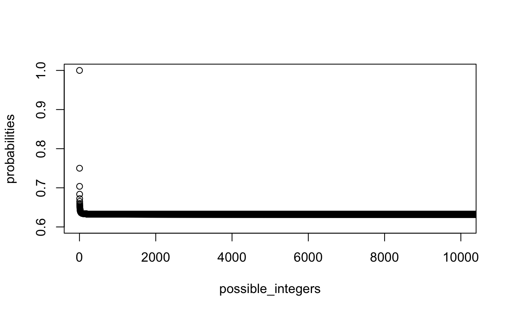
Question: We will now investigate numerically the probability that a bootstrap sample of size n = 100 contains the jth observation. Here j = 4. We repeatedly create bootstrap samples, and each time we record whether or not the fourth observation is contained in the bootstrap sample.
Answer: For the loop below the authors use a replication function with an empty vector, NA, this is then done 10,000 times. Next this goes into a loop with i in 1 through 10000. Next this function added a sample with replacement from 1:00, sees if it equals 4, sums the number of samples equal to 4 are greater than zero, this is then stored in the “store” which is then expressed by taking its mean.
set.seed(222222)
store <- rep(NA, 10000)
for(i in 1:10000){
store[i] <- sum(sample(1:100, rep=TRUE) == 4) > 0
}
mean(store)
[1] 0.6362Question: Comment on the results obtained.
Answer continued: The results of the function are 0.6362, this suggests that as the number of samples increases the likelihood of observing a specific jth observation in an n out of 100 in an increasingly large number of bootstraps with replacement approaches 0.636.
Basis: We now review k-fold cross-validation.
Question: Explain how k-fold cross-validation is implemented.
Answer: A k-folds cross validation method is implemented by randomly diving sets of observations in our data into groups, in this case they are known as folds. The data is divided k times and the first fold, which we refer to as the validation set is then removed and the k-1 folds leftover are then fit using an analysis method, we then validate the model that we got from the model with the data not in the fold to see how accurately the model predicts the left out data. This process is then repeated for all k-folds that were not the first and were used to fit the original model. Iterating through this process results in a cross validation estimate in the form of errors between the predicted values from the model using k-1 and the true values in the left out k-fold.
Question: What are the advantages and disadvantages of k-fold cross-validation relative to:
Question: The validation set approach?
Answer: The validation set approach faces the issue of insufficient data being used to construct its model. Since the method can only divide the data in half its estimates can do a poor job predicting the left out set because it contains so much data that could be reflective of the relationship between predictors and responses. This can result in variance in comparing the predictions from the modeling set to the validation set. As the authors also point out the validation set approach is fitting on fewer observations it is likely to overestimate test error rate. The disadvantage of k-folds compared to validation set approach.
Question: LOOCV?
Answer: Leave one out cross validation is essentially a special case of k-folds cross validation where the number of “k” folds is the total number of observations in the dataset, minus one. This approach is n-1 k-folds on the dataset and as a result it has little randomness in its selection thus it has an extremely small amount of variance between its predictions since a vast majority of data is used to make predictions that can only vary significantly from one point that is not used. Depending on the size of the dataset cross validating one for every point could take a great deal of computational power. Unlike the validation set leave-one-out-cross-validation will greatly underestimate the test error rates since its prediction only excludes a single point. However in k-folds a number of folds that is not computationally intensive or accounts for a larger difference between folds that allow for randomness in the subsets that can give a better sense of how errors are being made as they will be validated on many more points. As a result a number of k-folds can be chosen that is not 2 or n-1, this k can be determined in such a way that it likely has more bias than loocv, but balances the excessively high variance from 2 folds or validation set, and the excessively low variance of loocv.
Basis: In Chapter 4, we used logistic regression to predict the probability of default using income and balance on the Default data set. We will now estimate the test error of this logistic regression model using the validation set approach. Do not forget to set a random seed before beginning your analysis.
Question: Fit a logistic regression model that uses income and balance to predict default.
Answer: Below is my first equation labelled inc_bal_logit which uses the default data and a binomial family within a glm to model a logistic regression predicting whether of not an individual defaults based on the income and their balance of debt.
set.seed(777)
inc_bal_logit <- glm(default ~ income + balance, data = Default, family = "binomial")
inc_bal_logit
Call: glm(formula = default ~ income + balance, family = "binomial",
data = Default)
Coefficients:
(Intercept) income balance
-1.154e+01 2.081e-05 5.647e-03
Degrees of Freedom: 9999 Total (i.e. Null); 9997 Residual
Null Deviance: 2921
Residual Deviance: 1579 AIC: 1585Basis: Using the validation set approach, estimate the test error of this model. In order to do this, you must perform the following steps:
Question: Split the sample set into a training set and a validation set.
Answer: First I split the sample set into training and validation by sampling the data using the total number of rows in the dataset nrow(Default) and diving it in half by sampling the nrow(Default), nrow(Default)/2 times. This amounts to sampling from 10000 rows 5000 times randomly. Next I split the data into a validation and training set by choosing rows equivalent to those in my training set and not in my training set.
Question: Fit a multiple logistic regression model using only the training observations.
Answer: Next I fit a logistic regression using only my training observations which I defined above as default_training
Question: Obtain a prediction of default status for each individual in the validation set by computing the posterior probability of default for that individual, and classifying the individual to the default category if the posterior probability is greater than 0.5.
Answer: I then predict whether or not an individual in the validation set defaults by using the predict() function which takes my function inc_bal_logit_ii and my dataset, in this case the validation set default_validation, I then choose response as this is the type of prediction we are interested in rather than terms.
Question: Compute the validation set error, which is the fraction of the observations in the validation set that are misclassified.
Answer: I then compute the validation set error by taking the mean of the number of classification outcomes that are not equal to their true values in the default_validation dataset’s default column.
mean(classification != default_validation$default)
[1] 0.0256Question: Fit a logistic regression model that uses income and balance to predict default.
Answer: In the subsequent question I repeat my model using different splits acquired by changing the seed which dictates the random generation of all “random” generation in the model through the sampling split.
set.seed(908)
inc_bal_logit <- glm(default ~ income + balance, data = Default,
family = "binomial")
inc_bal_logit
Call: glm(formula = default ~ income + balance, family = "binomial",
data = Default)
Coefficients:
(Intercept) income balance
-1.154e+01 2.081e-05 5.647e-03
Degrees of Freedom: 9999 Total (i.e. Null); 9997 Residual
Null Deviance: 2921
Residual Deviance: 1579 AIC: 1585Basis: Using the validation set approach, estimate the test error of this model. In order to do this, you must perform the following steps:
Question: Split the sample set into a training set and a validation set.
Question: Fit a multiple logistic regression model using only the training observations.
Question: Obtain a prediction of default status for each individual in the validation set by computing the posterior probability of default for that individual, and classifying the individual to the default category if the posterior probability is greater than 0.5.
Question: Compute the validation set error, which is the fraction of the observations in the validation set that are misclassified.
mean(classification != default_validation$default)
[1] 0.0286Question: Fit a logistic regression model that uses income and balance to predict default.
set.seed(2000)
inc_bal_logit <- glm(default ~ income + balance, data = Default,
family = "binomial")
inc_bal_logit
Call: glm(formula = default ~ income + balance, family = "binomial",
data = Default)
Coefficients:
(Intercept) income balance
-1.154e+01 2.081e-05 5.647e-03
Degrees of Freedom: 9999 Total (i.e. Null); 9997 Residual
Null Deviance: 2921
Residual Deviance: 1579 AIC: 1585Basis: Using the validation set approach, estimate the test error of this model. In order to do this, you must perform the following steps:
Question: Split the sample set into a training set and a validation set.
Question: Fit a multiple logistic regression model using only the training observations.
Question: Obtain a prediction of default status for each individual in the validation set by computing the posterior probability of default for that individual, and classifying the individual to the default category if the posterior probability is greater than 0.5.
Question: Compute the validation set error, which is the fraction of the observations in the validation set that are misclassified.
mean(classification != default_validation$default)
[1] 0.0294Question: Fit a logistic regression model that uses income and balance to predict default.
set.seed(2)
inc_bal_logit <- glm(default ~ income + balance, data = Default,
family = "binomial")
inc_bal_logit
Call: glm(formula = default ~ income + balance, family = "binomial",
data = Default)
Coefficients:
(Intercept) income balance
-1.154e+01 2.081e-05 5.647e-03
Degrees of Freedom: 9999 Total (i.e. Null); 9997 Residual
Null Deviance: 2921
Residual Deviance: 1579 AIC: 1585Basis: Using the validation set approach, estimate the test error of this model. In order to do this, you must perform the following steps:
the validation set by computing the posterior probability of default for that individual, and classifying the individual to the default category if the posterior probability is greater than 0.5.
mean(classification != default_validation$default)
[1] 0.0238Question: Now consider a logistic regression model that predicts the probability of default using income, balance, and a dummy variable for student. Estimate the test error for this model using the validation set approach. Comment on whether or not including a dummy variable for student leads to a reduction in the test error rate.
set.seed(222)
student_bal_logit <- glm(default ~ income + balance + student,
data = Default, family = "binomial")
student_bal_logit
Call: glm(formula = default ~ income + balance + student, family = "binomial",
data = Default)
Coefficients:
(Intercept) income balance studentYes
-1.087e+01 3.033e-06 5.737e-03 -6.468e-01
Degrees of Freedom: 9999 Total (i.e. Null); 9996 Residual
Null Deviance: 2921
Residual Deviance: 1572 AIC: 1580Basis: Using the validation set approach, estimate the test error of this model. In order to do this, you must perform the following steps:
the validation set by computing the posterior probability of default for that individual, and classifying the individual to the default category if the posterior probability is greater than 0.5.
mean(classification != default_validation$default)
[1] 0.0492Answer: It appears that including the dummy variable for student increases the missclassification error rate in the dataset, in this way the inclusion of the variable is not beneficial in reducing the error rate of the function as it increases from under 0.03, or less than 3% to 0.0468 using my seed which is 4.68% which thus decreases the accuracy of the model. This could suggest that student variable leads to some calculations in the model that are more likely to mis-classify. Students take on a great volume of debt at a young age, however they do so as an investment for later earnings, as a result students with high debt may be misclassified by the regression due to their likely high debt.
Basis: We will now consider the Boston housing data set, from the ISLR2 library.
Question: Based on this data set, provide an estimate for the population mean of medv. Call this estimate mu.
Answer: My calculation for the population mean is found my taking the mean of the entire column of medv from the Boston dataset which is stored as mu
mu <- mean(Boston$medv)
mu %>% kable()
| x |
|---|
| 22.53281 |
Question: Provide an estimate of the standard error of mu. Interpret this result.
Hint: We can compute the standard error of the sample mean by dividing the sample standard deviation by the square root of the number of observations.
Answer: Using the hint I label the standard error of mu as the standard deviation of the Boston$medv column and diving it by the number of observations nrow in the Boston dataset which has its square root taken before deiving the standard deviation, this is then stored in se_mu
Question: Now estimate the standard error of mu using the bootstrap. How does this compare to your answer from (b)?
Answer: In order to estimate the standard error of mu using a bootstrap I must first create a function that can be used by boot, which will return our statistic of interest. In this case the data is Boston and its column medv Boston$medv which are placed in the first observation of the bootstrap. Next I need a statistic writing the function I needed it to specify the dataframe and column index as described in the chapter 5 lab. Next I need this function to return the mean of this dataframe’s specified index. Following the chapter 5 lab I use 1000 replicates of the bootstrap.
?boot
set.seed(547)
mu_function <- function(data, index) {
mu_for_function <- mean(data[index])
return(mu_for_function)
}
boot(Boston$medv, mu_function , R = 1000)
ORDINARY NONPARAMETRIC BOOTSTRAP
Call:
boot(data = Boston$medv, statistic = mu_function, R = 1000)
Bootstrap Statistics :
original bias std. error
t1* 22.53281 0.01013577 0.4090362Question: Based on your bootstrap estimate from (c), provide a 95 % confidence interval for the mean of medv. Compare it to the results obtained using t.test(Boston$medv).
Hint: You can approximate a 95 % confidence interval using the formula [mu - 2SE(mu), mu + 2SEmu].
Answer: I create the 95% confidence interval from my bootstrap using my mean estimate plus and minus 2 standard deviations, this estimate is 22.53281 as the mean I then use the hint formula addin or subtracting 2 standard errors.
| x |
|---|
| 0.4088611 |
ci_95_boot <- c(
(22.53281-2*0.4132074),(22.53281+2*0.4132074)
)
ci_95_boot %>% kable()
| x |
|---|
| 21.70640 |
| 23.35922 |
t.test(Boston$medv)
One Sample t-test
data: Boston$medv
t = 55.111, df = 505, p-value < 2.2e-16
alternative hypothesis: true mean is not equal to 0
95 percent confidence interval:
21.72953 23.33608
sample estimates:
mean of x
22.53281 Answer Continued: The t-test estimates (21.72953 23.33608) and our bootstrap estimates (21.70640 23.35922). The differences in the lower tail are below:
21.72953-21.70640
[1] 0.02313Answer Continued: The differences in the upper tail are below:
23.33608 - 23.35922
[1] -0.02314Answer Continued: The difference is similar in both directions on the lower tail the t-test estimates a slightly higher upper tail and a slightly higher on the lower tail.
Question: Based on this data set, provide an estimate, mu_med, for the median value of medv in the population.
Answer: I calculate this median value as the median of the Boston dataset and medv column using the median function which is saved as mu_med.
mu_med <- median(Boston$medv)
mu_med %>% kable()
| x |
|---|
| 21.2 |
Question: We now would like to estimate the standard error of mu_med.Unfortunately, there is no simple formula for computing the standard error of the median. Instead, estimate the standard error of the median using the bootstrap. Comment on your findings.
Answer: Below I create a function to take the median of a dataset and its column index that works the same way as the prior mean function.
set.seed(8282)
median_function <- function(data, index) {
median_for_function <- median(data[index])
return(median_for_function)
}
boot(Boston$medv, median_function, R = 1000)
ORDINARY NONPARAMETRIC BOOTSTRAP
Call:
boot(data = Boston$medv, statistic = median_function, R = 1000)
Bootstrap Statistics :
original bias std. error
t1* 21.2 -0.01325 0.381356Answer Continued: The resulting standard error from this bootstrap is 0.381356.
Question: Based on this data set, provide an estimate for the tenth percentile of medv in Boston census tracts. Call this quantity mu_0.1. (You can use the quantile() function.)
Answer: Below I calculate the 10th percentile using the Boston dataset and the medv column and the quantile function, then specifying the quantile between [0 and 1] I use 0.1 as this is the 10th percentile
mu_0.1 <- quantile(Boston$medv, 0.1)
mu_0.1 %>% kable()
| x | |
|---|---|
| 10% | 12.75 |
Question: Use the bootstrap to estimate the standard error of mu_0.1. Comment on your findings.
set.seed(8282)
tenth_quantile_function <- function(data, index) {
tenth_for_function <- quantile(data[index], 0.1)
return(tenth_for_function)
}
boot(Boston$medv, tenth_quantile_function, R = 1000)
ORDINARY NONPARAMETRIC BOOTSTRAP
Call:
boot(data = Boston$medv, statistic = tenth_quantile_function,
R = 1000)
Bootstrap Statistics :
original bias std. error
t1* 12.75 -0.004 0.5122122Answer: In this case I estimate the average quantile estimate of medv in the 10th percentile as 12.75 in the bootstrap as compared to 12.75 in the dataset. It appears that both function capture the same exact medv point as the 10th percentile in the dataset.
Basis: For parts (a) through (c), indicate which of i. through iv. is correct. Justify your answer.
Question: The lasso, relative to least squares, is:
Answer: Compared to least squares the lasso regression is less flexible since it will perform variable selection, this is meant to reduce overfitting which least squares will often do. In this case the answer is correct because lasso’s are not more flexible to least squares since they do not fit as many variables and thus will not fit the data as closely.
Answer: This answer is is incorrect as in the case of the first one because a
Answer: This answer is correct, as established lasso is less flexible as it will reduce non-influential parameters to zero depending on its tuning parameters but will always be less flexible than the regression it is based on if the tuning parameter is non-zero. However as the authors in ISLR explain “the lasso solution can yield a reduction in variance at the expense of a small increase in bias,” in cases when least squares is over fit and results in inaccurate predictions,” which this case follows.
Answer: This answer is incorrect as lasso regression is formulated in order to reduce overfitting and thus variance on fitted data. As a result, and relative to least squares, lasso is not used to reduce bias, but instead variance in estimates.
Question: ridge regression relative to least squares.
Answer: As in the first response the ridge regression also is less flexible than least squares because it removes variables, or at least most their coefficients closer to zero, however, unlike lasso, it keeps the p-varaibles within the model. In this case making variables smaller does not allow the ridge regression to follow the data as closely as least squares as increasing the shrinkage coefficient leads to a decrease in flexibility by making the fit closer, the second part is correct however as the ridge regression will decrease variance as overfitting is also reduced..
Answer: This response is also incorrect as if the shrinkage coefficient is sufficiently small the function is less flexible, the second part is also incorrect as the function is valuable when it gives improved prediction accuracy when its increase in bias is sufficiently less than its decrease in variance.
Answer: This response is again correct, here like lasso, we reduce the influence of non-influential parameters by moving them towards, or to zero, as a result these variables will lose influence thus not being as likely to overfit as a result, the function may not be able to avoid bias as much as linear regression but can greatly reduce the variance due to overfitting.
Answer: This is again incorrect as it will decrease variance rather than bias in its efforts not to overfit.
Question: non-linear methods relative to least squares.
Answer: Non-linear methods are more flexible than least squares, however, in most cases it is useful when its increase in bias is less than its decrease in
Answer: Non-linear methods are more flexible as they will fit predictions more closely, they are also able to afford more predictive accuracy when their increase in variance is less than their increase in bias, since bias is the difference between a parameters and the expected value of a statistic the non-linear model will give better predictions when its increase in variance is less than its increase in bias. This is due to the bias variance trade-off, here out non-linear model fits data more closely thus it has the potential to have higher variance if it is overfit than linear regression, as a result if that increase in variance is sufficiency less than its decrease in bias due to its closer fit than we consider it a stronger model for the scenario thus this answer is correct.
Answer: This answer is incorrect as non-linear models are more flexible than linear ones.
Answer: This answer is incorrect as non-linear models are more flexible than linear ones.
Basis: In this exercise, we will predict the number of applications received using the other variables in the College data set.
Question: Split the data set into a training set and a test set.
Answer: I split the data into training and test set using 1 through the number of rows in the dataset and sampling it nrow(College)*0.8 times which works out to taking 621.6 row samples with replacement equals FALSE, this equates to and 80%, 20% split in the training and test sets. I specify the college_training as the 80% of College data I specified as my training. Next I find the test set using the converse of the training rows.
Question: Fit a linear model using least squares on the training set, and report the test error obtained.
Answer: I fit a least squares on my 80% training set below using all variables since we will be using a ridge regression that later account for the number of variables we should use as the ridge moves their coefficients towards zero.
Answer: I then use the predict function using my least squares function and my test data to make prediction for my error rate. I express the test error as the mean square error, which is calculated as 142.0359
set.seed(9292)
pred_college_for_mse <- predict(least_squares_college, newdata=college_test)
MSE_college_test <- mean((college_test$Grad.Rate-pred_college_for_mse)^2)
MSE_college_test %>% kable()
| x |
|---|
| 190.8233 |
Question: Fit a ridge regression model on the training set, with lambda chosen by cross-validation. Report the test error obtained.
Answer: Below I make a grid of values that is a sequence of 10 to -2 of length 100 which goes from 10^10 to 10^(-2) creates a set of selected values. In order to fit a ridge model using cross validation I split the model into training and test set. Using the glmnet() function I then plug in my x-ridge model matrix and the y-ridge being the true values from the graduation rate column of the college dataset. This results in a dimension of 18 by 100.
set.seed(9292)
x_ridge <- model.matrix(Grad.Rate ~ ., College)[, -1]
y_ridge <- College$Grad.Rate
grid <- 10^seq(10, -2, length = 100)
ridge.mod <- glmnet(x_ridge, y_ridge, alpha = 0, lambda = grid)
dim(coef(ridge.mod))
[1] 18 100Answer: Below I then split my data into an 80% 20% split between training and test sets. These values are stored in the train_ridge and test_ridge variables.
Answer: I then use the glmnet() function with an alpha of 0 which is a ridge penalty in this case. In this scenario the function is named ridge.mod, this is then put into predict() where it predicts on the test section of the data.
set.seed(9292)
ridge.mod <- glmnet(x_ridge[train_ridge, ], y_ridge[train_ridge],
alpha = 0, lambda = grid, thresh = 1e-12)
ridge.pred <- predict(ridge.mod, s = 4, newx = x_ridge[test_ridge,])
mean((ridge.pred - y.test_ridge)^2) %>% kable()
| x |
|---|
| 191.9619 |
Answer: Afterwards we fit the model again using the glmnet() function ridge.mod using a new x from x_ridge and our x and y from training. We then access the 18 coefficients below, as can be seen the ridge moves the coefficients it decides have little impact towns zero.
set.seed(9292)
ridge.pred <- predict(ridge.mod, s = 0, newx = x_ridge[test_ridge, ],
exact = T, x = x_ridge[train_ridge, ], y = y_ridge[train_ridge])
predict(ridge.mod, s = 0, exact = T, type = "coefficients",
x = x_ridge[train_ridge, ], y = y_ridge[train_ridge])[1:18, ]
(Intercept) PrivateYes Apps Accept Enroll
28.8970053130 4.6799076483 0.0012568714 -0.0008668106 0.0023593568
Top10perc Top25perc F.Undergrad P.Undergrad Outstate
0.0468337629 0.1437342449 -0.0004323463 -0.0013350746 0.0008084910
Room.Board Books Personal PhD Terminal
0.0021795777 0.0004206020 -0.0017882831 0.1379432456 -0.0702662338
S.F.Ratio perc.alumni Expend
0.0406692785 0.2997380403 -0.0004995716 Answer continued: Next after beginning these tests we use cross validation to get the optimal tuning parameters from a number of repetitions using cv.glmnet() in this case it takes our training values and an alpha of zero to indicate it is a ridge and uses a number of values of lambda to determine which minimizes mean squared errors. This is plotted below
set.seed(9292)
cv.out <- cv.glmnet(x_ridge[train_ridge, ], y_ridge[train_ridge], alpha = 0)
plot(cv.out)
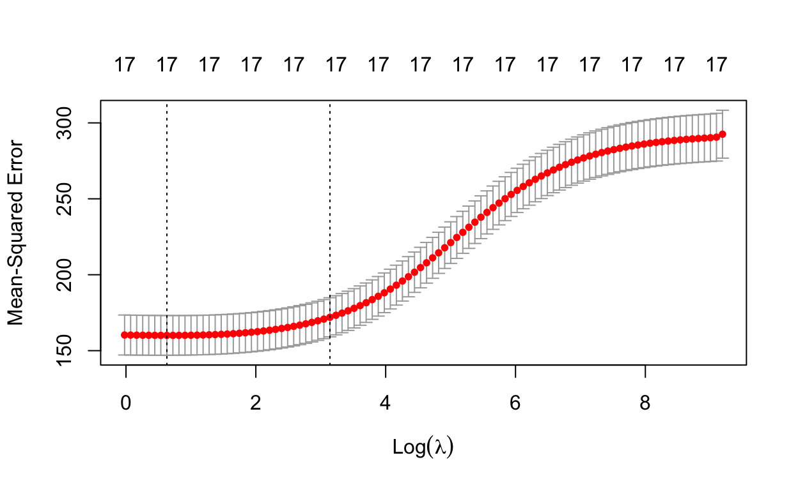
Answer continued: The cv.out we calculated above outputs a 1se and min lambda for its mean square errors which I access below to determine the cross validated tuning parameter.
set.seed(9292)
bestlam <- cv.out$lambda.min
bestlam
[1] 1.876765Answer continued: Finally we use out predict function to see what our mean squared error will be for our tuning parameters than minimizes MSE, in this case it is 191.0022 as seen below compared to the grid values which yielded a 191.9619 at best.
set.seed(9292)
ridge.pred <- predict(cv.out, s = bestlam, newx = x_ridge[test_ridge,])
mean((ridge.pred - y.test_ridge)^2) %>% kable()
| x |
|---|
| 191.0022 |
Answer continued: The coefficient outputs for the lambda that minimizes MSE are then outputted below. Here Private school, per.alumni, Top10perc, and top25perc, along with Phd having coefficients over 0.05 in predicting the graduation rate.
set.seed(9292)
out <- glmnet(x_ridge[train_ridge, ], y_ridge[train_ridge], alpha = 0)
predict(out, type = "coefficients", s = bestlam)[1:18, ]
(Intercept) PrivateYes Apps Accept Enroll
30.4028107340 4.3857666072 0.0005579653 0.0002846755 0.0002715066
Top10perc Top25perc F.Undergrad P.Undergrad Outstate
0.0898592282 0.1170937551 -0.0001524760 -0.0012353250 0.0006590921
Room.Board Books Personal PhD Terminal
0.0020270611 0.0001479914 -0.0018704177 0.0918979855 -0.0206644006
S.F.Ratio perc.alumni Expend
0.0319300362 0.2726551009 -0.0002998044 Question: Fit a lasso model on the training set, with lambda chosen by cross validation. Report the test error obtained, along with the number of non-zero coefficient estimates.
Answer: The process of creating the lasso is largely similar to that of the ridge though here our inital glmnet() takes an alpha of 1. The plot below this indicates that depending on our choise of tuning parameter lambda, certain coefficients will become zero.
set.seed(9292)
lasso.mod <- glmnet(x_ridge[train_ridge, ], y_ridge[train_ridge],
alpha = 1, lambda = grid)
plot(lasso.mod)
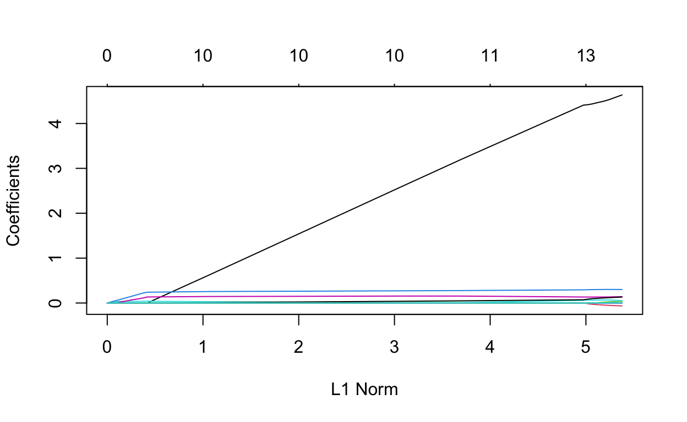
Answer continued: We continue this analysis by cross validation using cv.glmnet() with an alpha of 1 to find the coefficients that again, minimize the MSE.
set.seed(9292)
cv.out_2 <- cv.glmnet(x_ridge[train_ridge, ], y_ridge[train_ridge], alpha = 1)
plot(cv.out_2)
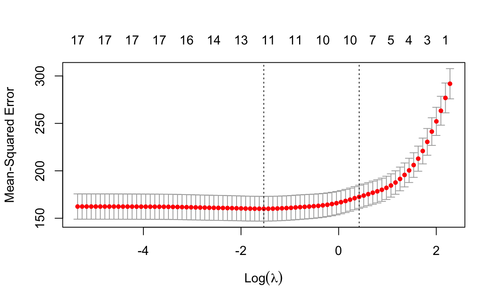
Answer continued: After this cross validation has been calculated we then access the lambda that minimizes MSE. We then use the predict function to calculate predictions for our lasso using the lambda that minimizes MSE this gets a MSE of 190.8808.
set.seed(9292)
bestlam <- cv.out_2$lambda.min
lasso.pred <- predict(cv.out_2, s = bestlam, newx = x_ridge[test_ridge,])
mean((lasso.pred - y.test_ridge)^2) %>% kable()
| x |
|---|
| 190.8808 |
Answer continued: Finally we calculate and show the coefficients for our equation with the lasso reducing our number of parameters by moving coefficients towards zero that have low impact. Here we remove, Accept, Enroll, F.Undergrad, Books, Terminal, and S.F.Ratio with other values still being reflected in the equation coefficients.
set.seed(9292)
out <- glmnet(x_ridge[train_ridge, ], y_ridge[train_ridge],
alpha = 1, lambda = grid)
lasso.coef <- predict(out, type = "coefficients", s = bestlam)[1:18, ]
lasso.coef
(Intercept) PrivateYes Apps Accept Enroll
29.8146208578 4.2178703808 0.0006714817 0.0000000000 0.0000000000
Top10perc Top25perc F.Undergrad P.Undergrad Outstate
0.0508305488 0.1371884865 0.0000000000 -0.0013060619 0.0007140270
Room.Board Books Personal PhD Terminal
0.0020119407 0.0000000000 -0.0016927269 0.0683671684 0.0000000000
S.F.Ratio perc.alumni Expend
0.0000000000 0.2909171513 -0.0002954747 Uses Plots in Figure 8.14.
Question: Sketch the tree corresponding to the partition of the predictor space illustrated in the left-hand panel of Figure 8.14. The numbers inside the boxes indicate the mean of Y within each region.
Answer: Possible Partitions in 8.14 Parent (x1<1), if not below return 5. All else if x1 is below 1, next (x2<1, or x2>1) if x2 greater than 1 return 15, if x1<0 less than 0 return 3, if it is more than 0, but x2 is also less than zero return 10
library(treemap)
library(DiagrammeR)
fig8_1_4 <- Node$new("figure 8.14")
top_node <- fig8_1_4$AddChild("If x1<1")
return_5 <- top_node$AddChild("5")
second_node <- top_node$AddChild("If x2<1")
return_15 <- second_node$AddChild("15")
third_node <- second_node$AddChild("If x1<0")
return_3 <- third_node$AddChild("3")
fourth_node <- third_node$AddChild("x2<0")
fifth_node <- fourth_node$AddChild("10")
fifth_node <- fourth_node$AddChild("0")
plot(fig8_1_4)
Question: Create a diagram similar to the left-hand panel of Figure 8.14, using the tree illustrated in the right-hand panel of the same figure. You should divide up the predictor space into the correct regions, and indicate the mean for each region.
?plot
Help on topic 'plot' was found in the following packages:
Package Library
base /Library/Frameworks/R.framework/Resources/library
graphics /Library/Frameworks/R.framework/Versions/4.1/Resources/library
Using the first match ...plot(NA, NA, type = "n", xlim = c(0,3),
ylim = c(-1, 1.25), xlab = "x-2", ylab = "x-1")
lines(x = c(1, 1), y = c(-1.0, 1.20))
lines(x = c(2, 2), y = c(-1.0, 1.20))
lines(x = c(0, 1), y = c(1, 1))
lines(x = c(1, 2), y = c(0, 0))
text(0.5, 1.2 , "0.63")
text(0.5, 0.0 , "-1.80")
text(2.5, -0.0, "-2.49")
text(1.5, -0.5, "-1.06")
text(1.5, 0.5, "0.21")
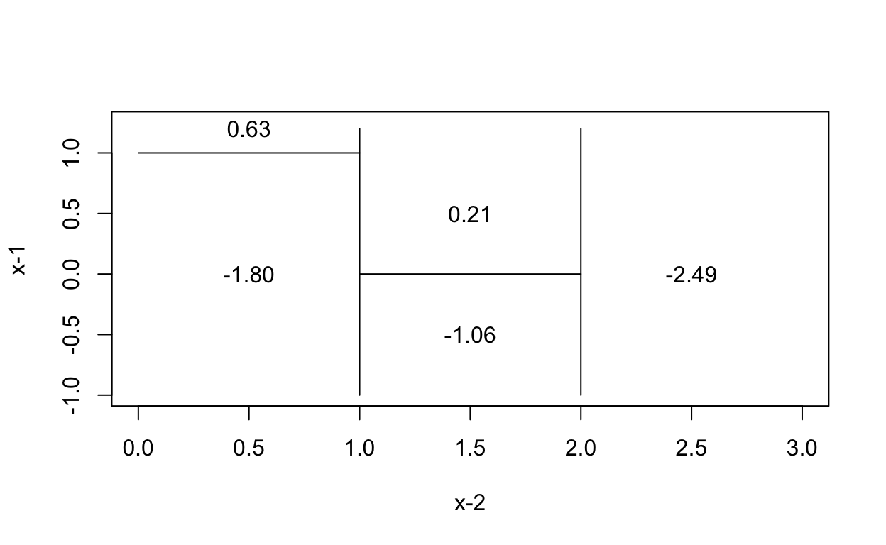
Question: In the lab, we applied random forests to the Boston data using mtry = 6 and using ntree = 25 and ntree = 500. Create a plot displaying the test error resulting from random forests on this data set for a more comprehensive range of values for mtry and ntree. You can model your plot after Figure 8.10. Describe the results obtained.
Answer: I will be modeling my response from that in figure 8.10, in this case they use 3 m-values being m=p, m=p/2, and m=sqrt(p), in addition to this I will vary the number of trees in each case. As seen below, I am using 13, 6.5 rounded up to 7 predictions, and 3.6 rounded up to 4 for the square root of p.
Answer Continued: As in the lab, I will divide my data into testing and training set, I will use 70% of the data in my training set for the model
set.seed(888)
train_boston_set <- sample(1:nrow(Boston), nrow(Boston)*0.7)
Rf_train_boston <- Boston[train_boston_set,]
Rf_test_boston <- Boston[-train_boston_set,]
Boston_rf_mtry_13_ntree_25 <- randomForest(medv~. ,subset = train_boston_set, data = Boston, mtry = 13, ntree = 25)
Boston_rf_mtry_7_ntree_25 <- randomForest(medv~.,subset = train_boston_set, data = Boston, mtry = 7, ntree = 25)
Boston_rf_mtry_4_ntree_25 <- randomForest(medv~.,subset = train_boston_set, data = Boston, mtry = 4, ntree = 25)
Boston_rf_mtry_13_ntree_100 <- randomForest(medv~. ,subset = train_boston_set, data = Boston, mtry = 13, ntree = 100)
Boston_rf_mtry_7_ntree_100 <- randomForest(medv~.,subset = train_boston_set, data = Boston, mtry = 7, ntree = 100)
Boston_rf_mtry_4_ntree_100 <-randomForest(medv~.,subset = train_boston_set, data = Boston, mtry = 4, ntree = 100)
Boston_rf_mtry_13_ntree_500 <- randomForest(medv~. ,subset = train_boston_set, data = Boston, mtry = 13, ntree = 500)
Boston_rf_mtry_7_ntree_500<-randomForest(medv~.,subset = train_boston_set, data = Boston, mtry = 7, ntree = 500)
Boston_rf_mtry_4_ntree_500<-randomForest(medv~.,subset = train_boston_set, data = Boston, mtry = 4, ntree = 500)
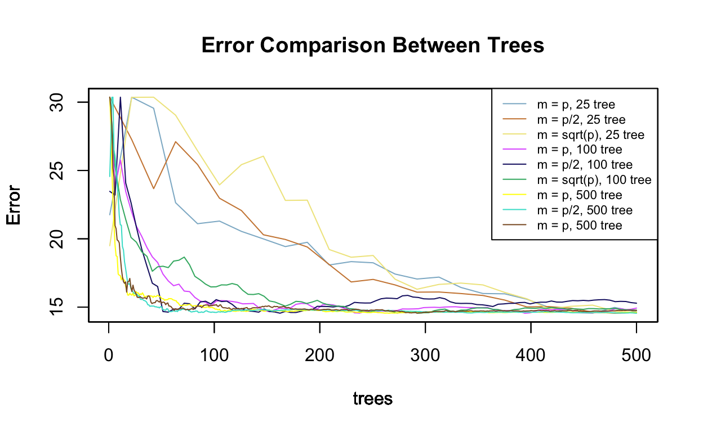
Answer continued: The plot above indicates the average errors plotted against the number of trees used in the derivation, in this case I have included a legend as in 8.10 to indicate both the number of trees used in addition to my comparison between m and p used in my random forest. In this case it is apparent that trees in the 500s initially have the lowest mean squared errors when compared to 25 trees, and to a lesser extent, 100 trees. Below I will plot graphs containing only the 25 trees, 100 trees, and 500 trees.
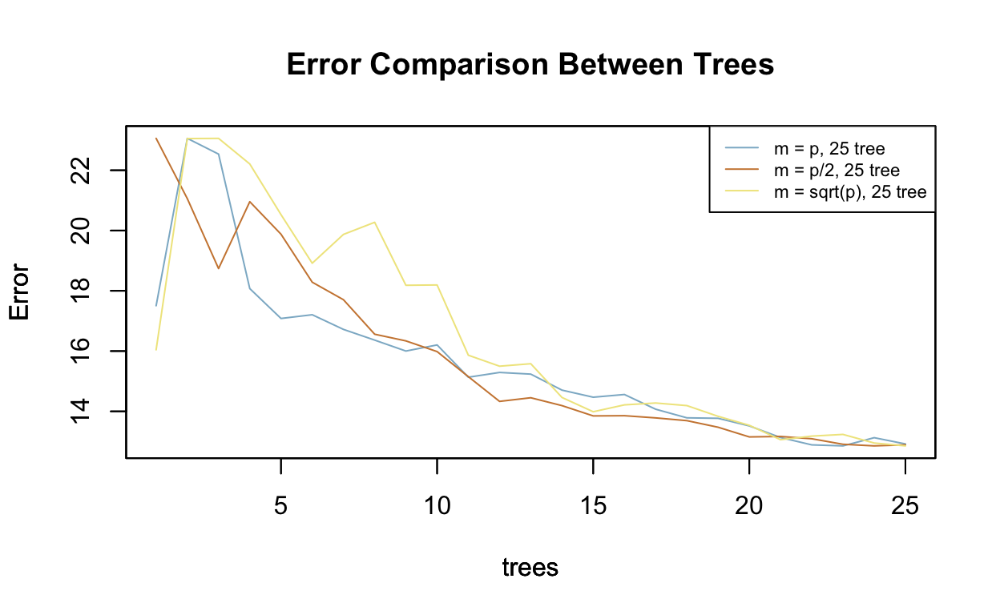
Answer continued: Comparing the 25 trees to each other and 100 trees, it does firstly appear that 100 trees decreases the error rate across the differing m and p values.
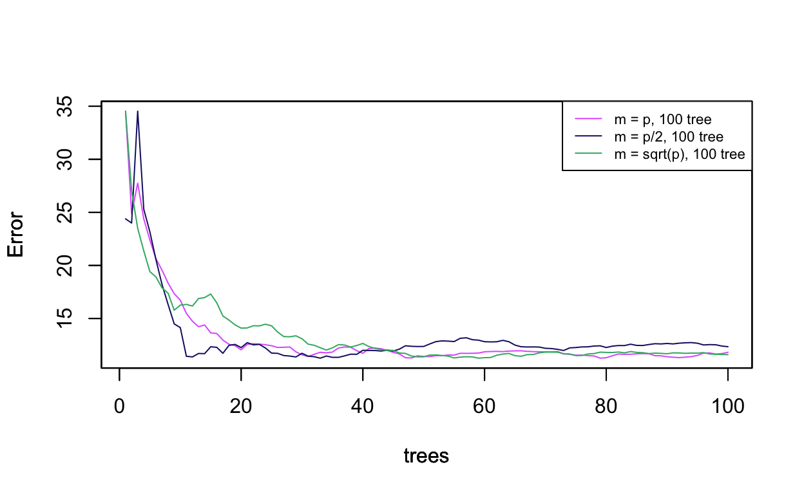
Answer continued: Comparing the 100 trees and 500s trees it also appears that the higher number of trees decreases the error rate in the data, with all plotted against each other as in the first graph it does appear that the larger number of trees decreases the error rate more rapidly as the number of trees increases.
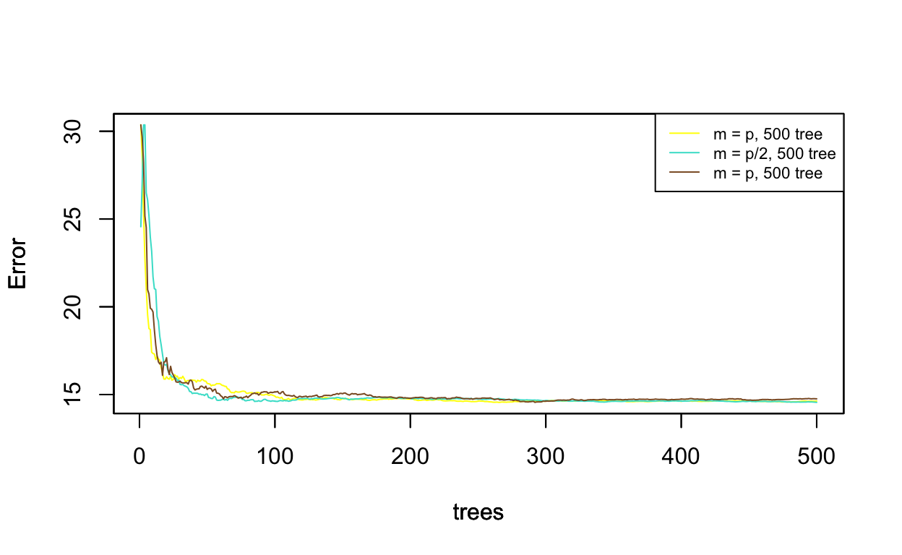
Basis: This problem involves the OJ data set which is part of the ISLR2 package.
Question: Create a training set containing a random sample of 800 observations, and a test set containing the remaining observations.
Answer: In order to take a sample 800 observations from OJ I use the sample function to take 800 from 1 through the total number of rows in the dataset. The test is then taken as the rows not included in this set of sampled rows.
Question: Fit a tree to the training data, with Purchase as the response and the other variables as predictors. Use the summary() function to produce summary statistics about the tree, and describe the results obtained. What is the training error rate? How many terminal nodes does the tree have?
Answer: Using the training data below I fit a tree using the tree function on the training subset. The training error rate from the summary is 0.1475 and there are 8 terminal nodes.
set.seed(727)
tree.OJ_train <- tree(Purchase ~ ., OJ, subset = train_orange_juice)
summary(tree.OJ_train)
Classification tree:
tree(formula = Purchase ~ ., data = OJ, subset = train_orange_juice)
Variables actually used in tree construction:
[1] "LoyalCH" "PriceDiff" "ListPriceDiff" "PctDiscMM"
Number of terminal nodes: 8
Residual mean deviance: 0.7145 = 565.9 / 792
Misclassification error rate: 0.1475 = 118 / 800 Question: Type in the name of the tree object in order to get a detailed text output. Pick one of the terminal nodes, and interpret the information displayed.
tree.OJ_train
node), split, n, deviance, yval, (yprob)
* denotes terminal node
1) root 800 1065.00 CH ( 0.61625 0.38375 )
2) LoyalCH < 0.5036 344 407.30 MM ( 0.27907 0.72093 )
4) LoyalCH < 0.276142 172 131.50 MM ( 0.12791 0.87209 )
8) LoyalCH < 0.051325 62 10.24 MM ( 0.01613 0.98387 ) *
9) LoyalCH > 0.051325 110 107.30 MM ( 0.19091 0.80909 ) *
5) LoyalCH > 0.276142 172 235.10 MM ( 0.43023 0.56977 )
10) PriceDiff < 0.05 69 60.54 MM ( 0.15942 0.84058 ) *
11) PriceDiff > 0.05 103 137.60 CH ( 0.61165 0.38835 ) *
3) LoyalCH > 0.5036 456 351.30 CH ( 0.87061 0.12939 )
6) LoyalCH < 0.764572 188 215.70 CH ( 0.73936 0.26064 )
12) ListPriceDiff < 0.235 74 102.60 MM ( 0.50000 0.50000 )
24) PctDiscMM < 0.196196 54 71.19 CH ( 0.62963 0.37037 ) *
25) PctDiscMM > 0.196196 20 16.91 MM ( 0.15000 0.85000 ) *
13) ListPriceDiff > 0.235 114 76.72 CH ( 0.89474 0.10526 ) *
7) LoyalCH > 0.764572 268 85.39 CH ( 0.96269 0.03731 ) *Answer: One of the terminal nodes is the 7th one indicated, “7) LoyalCH > 0.764572 268, 85.39 CH ( 0.96269 0.03731 )” this node indicates 6 attributes of the node the first, node), is 7) in this case. The next attribute is the split in the data that it represents in this case split, which is when the variable LoyalCH > 0.764572 next is the n, or number of observations that fulfill this attribute. Following this is the deviance of this observation denoted as 85.39, yval is 0.96269, and finally (yprob) is 0.03731.
Question: Create a plot of the tree, and interpret the results.
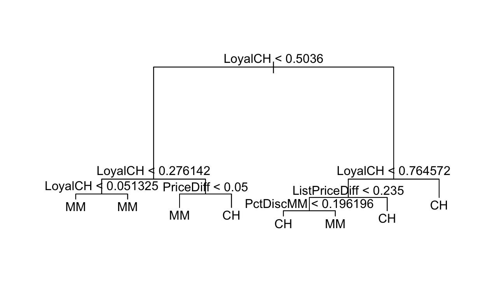
Answer: The tree above indicates predicted classification into 2 categories, either purchasing citrus hill or minute maid using class proportions in our training data, each split represents a distinction between observations in each predictor category as determined by prior steps to eliminate the most classification error. First Loyal CH, or customer brand loyalty for citrus hill is observed and split to be above or below a loyalty of 0.5036, this split then, again distinguishes loyal CH. On the 2nd node on the left loyal ch is below 0.5036, it is then tested whether or not loyalty to CH is above or below 0.276, if it is below this, it is then test on the third level node on the far left whether or not loyalty CH is below or above 0.051325, in this case whether loyalty is below this or above it (indicating it is between 0.051325 and 0.276) the customers will always be classified as being fans of minute main. Continuing from the 2nd node on the left this time we test LoyalCH above 0.276, this leads us to the third node PriceDiff < 0.05, in this case if the price difference is between the two and CH loyalty is above 0.276, the customer is categorized as buying CH, however if the loyalty to CH is 0.276, but the price difference is less than 0.05 then the customers is categorized as choosing MM. Going to the second node on the right, LoyalCH < 0.764, we categorize a customer as buying CH if their loyalty to the brand is greater than 0.764. However if that node LoyalCH < 0.764 is less than the stated value then we look to ListPriceDiff, in this case LoyalCH is between 0.50 and 0.764, this third node then predicts a customer as CH if the listed price difference is above 0.235, if the list price difference is less we move to PctDiscMM or the percentage discount for MM, if the discount is above 0.196 the customer will choose MM, if it is below they will be categorized as choosing CH.
Question: Predict the response on the test data, and produce a confusion matrix comparing the test labels to the predicted test labels. What is the test error rate?
set.seed(727)
test.pred <- predict(tree.OJ_train, OJ_test, type = "class")
table(test.pred, OJ_test$Purchase) %>% kable()
| CH | MM | |
|---|---|---|
| CH | 144 | 40 |
| MM | 16 | 70 |
Answer: The error rate is the number of incorrectly identified purchasers of orange juice in terms of their actual purcahse compared to whether or not they were predicted to purchase it by the model. It is calculated here as 0.2074074, or 20.7%, this is calculated below as one minus the difference between correctly identified buyers and incorrectly identified buyers.
(1-(144+70)/(144+70+40+16) ) %>% kable()
| x |
|---|
| 0.2074074 |
Question: Apply the cv.tree() function to the training set in order to determine the optimal tree size.
Answer: The dev, or deviation represents the error rate. In this case it is lowest when size=8 and dev is 646.6050.
set.seed(727)
cv.OJ <- cv.tree(tree.OJ_train)
cv.OJ
$size
[1] 8 7 6 5 4 3 2 1
$dev
[1] 646.6050 674.2620 673.7721 766.0959 770.2143 751.8258
[7] 772.1636 1066.2872
$k
[1] -Inf 14.04513 14.48895 36.41322 36.93239 40.72147
[7] 50.20841 306.72764
$method
[1] "deviance"
attr(,"class")
[1] "prune" "tree.sequence"Question: Produce a plot with tree size on the x-axis and cross-validated classification error rate on the y-axis.
Answer: Below I have plotted the tree size compared to the classification error rate. As can be seen 8 is much lower than the tree sizes that come before them in terms of error rate.
set.seed(727)
plot(cv.OJ$size, cv.OJ$dev, type = "b", xlab = "Tree Size", ylab="Cross Validated Misclass")
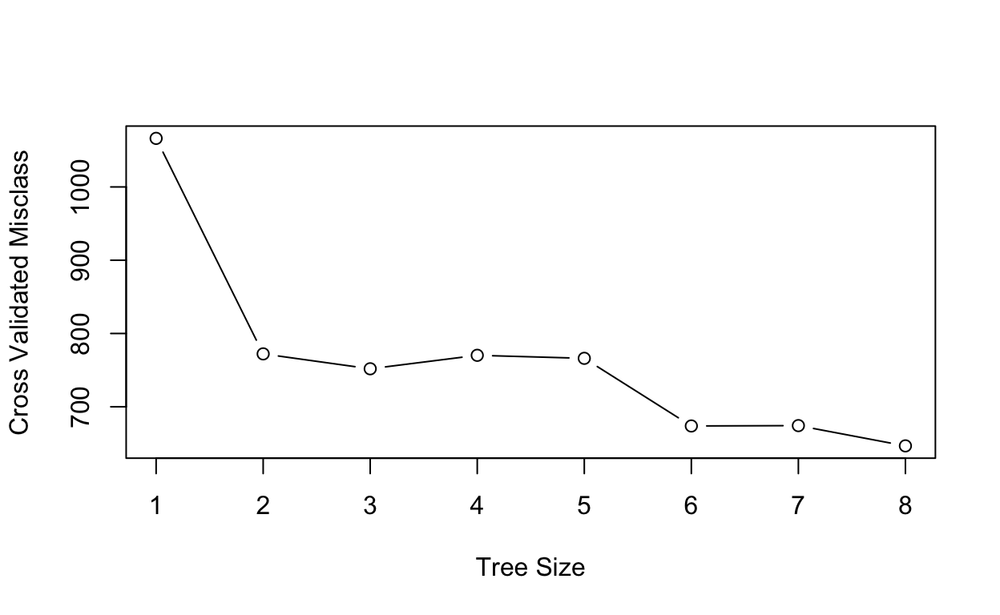
Question: Which tree size corresponds to the lowest cross-validated classification error rate?
Answer: It appears that the tree with the lowest possible error is 8 in this case.
Question: Produce a pruned tree corresponding to the optimal tree size obtained using cross-validation. If cross-validation does not lead to selection of a pruned tree, then create a pruned tree with five terminal nodes.
Classification tree:
tree(formula = Purchase ~ ., data = OJ, subset = train_orange_juice)
Variables actually used in tree construction:
[1] "LoyalCH" "PriceDiff" "ListPriceDiff" "PctDiscMM"
Number of terminal nodes: 8
Residual mean deviance: 0.7145 = 565.9 / 792
Misclassification error rate: 0.1475 = 118 / 800 Answer: In this case the misclassification error rate is 0.1475 as indicated by the summary above.
Question: Compare the training error rates between the pruned and un-pruned trees. Which is higher?
Answer: The training error rate in the pruned tree is 0.1475, this is far lower than the unpruned rate of 0.2074074.
Question: Compare the test error rates between the pruned and unpruned trees. Which is higher?
set.seed(727)
prediction_pruned <- predict(prune.OJ, OJ_test,
type = "class")
table(prediction_pruned, OJ_test$Purchase) %>% kable()
| CH | MM | |
|---|---|---|
| CH | 144 | 40 |
| MM | 16 | 70 |
Answer: Here we see the misclassification error rate is 0.2074074, or about 20.7% this is the same as the prior rate.
(1-(144+70)/(144+40+16+70)) %>% kable()
| x |
|---|
| 0.2074074 |
Chosen Dataset: For my final project I wanted to combine machine learning techniques with a networks dataset to see if certain models could be used on it. I am using data on conflict which I am treating as a network with node and edge attributes, using these attributes I think it would be interesting to see if it is possible to use classification techniques like KNN, LDA, and logistic regression to predict centrality and see what node and edge attributes contribute to centrality ranking.